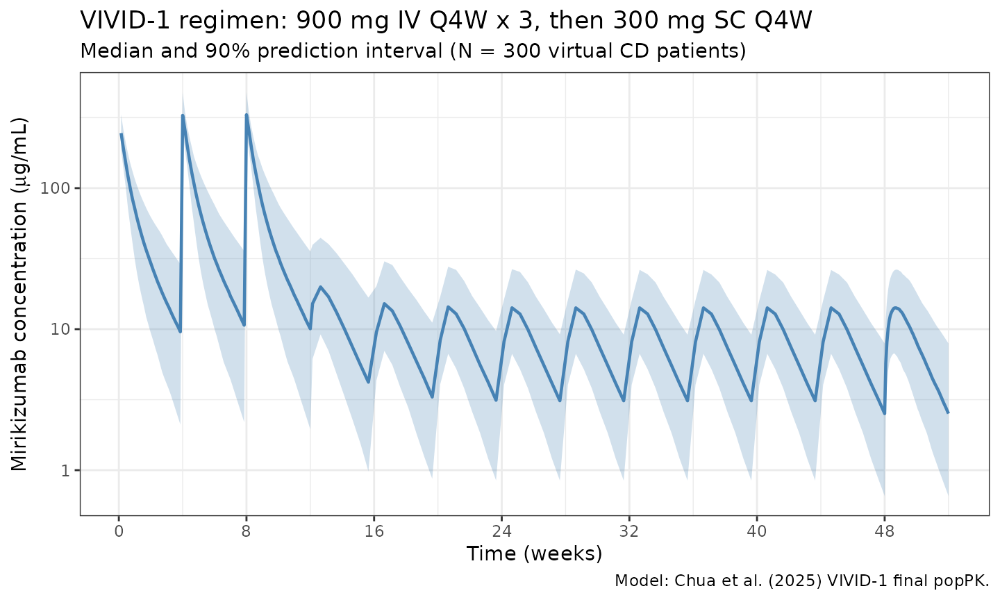

Chua_2025_mirikizumab
Source:vignettes/articles/Chua_2025_mirikizumab.Rmd
Chua_2025_mirikizumab.Rmd
library(nlmixr2lib)
library(rxode2)
#> rxode2 5.0.2 using 2 threads (see ?getRxThreads)
#> no cache: create with `rxCreateCache()`
library(dplyr)
#>
#> Attaching package: 'dplyr'
#> The following objects are masked from 'package:stats':
#>
#> filter, lag
#> The following objects are masked from 'package:base':
#>
#> intersect, setdiff, setequal, union
library(tidyr)
library(ggplot2)
library(PKNCA)
#>
#> Attaching package: 'PKNCA'
#> The following object is masked from 'package:stats':
#>
#> filterMirikizumab population PK in Crohn’s disease (VIVID-1 phase 3)
Replicate the VIVID-1 final population PK model reported by Chua et al. (2025) in patients with moderately-to-severely active Crohn’s disease. Mirikizumab is a humanized IgG4 monoclonal antibody that binds the p19 subunit of IL-23. The induction regimen is 900 mg IV every 4 weeks for three doses (weeks 0, 4, 8); the maintenance regimen is 300 mg SC every 4 weeks through week 52.
- Citation: Chua L, Otani Y, Lin Z, Friedrich S, Durand F, Zhang XC. Mirikizumab Pharmacokinetics and Exposure-Response in Patients With Moderately-To-Severely Active Crohn’s Disease: Results From Two Randomized Studies. Clin Transl Sci. 2025;18(8):e70320. doi:10.1111/cts.70320
- Article: https://doi.org/10.1111/cts.70320
The paper reports two independent final popPK models — SERENITY (phase 2, n=186) and VIVID-1 (phase 3, n=711) — with different covariate structures. This vignette replicates VIVID-1 only, which supports the approved Crohn’s disease dose regimen and is the model underlying the published simulations (Figure S6). SERENITY is not reproduced in this package.
Population
VIVID-1 (NCT03926130) was a global phase 3 treat-through study (July 2019 to October 2023) of mirikizumab versus placebo and ustekinumab in moderately-to- severely active Crohn’s disease. The popPK dataset comprised 5,318 observations from 711 patients (628 mirikizumab-treated during induction plus 83 placebo non-responders who crossed over after Week 12).
Baseline demographics (Chua 2025 Table 1): mean weight 68.1 kg (range 21.1-154.0), mean age 36.3 years (range 18-74), 56.5% male, 70.7% White / 25.0% Asian / 4.2% Other; mean baseline SES-CD 12.9 and mean baseline CDAI 319. 53.4% had previous biologic therapy and 47.8% had failed previous biologic therapy.
The same demographics are available programmatically via the model’s
metadata (accessible as a meta$population list once the
model is evaluated).
Source trace
The per-parameter origin is recorded as an in-file comment next to
each ini() entry in
inst/modeldb/specificDrugs/Chua_2025_mirikizumab.R. All
rate parameters have been converted from h^-1 (as published) to day^-1
(nlmixr2lib time convention) by multiplying by 24.
| Parameter / equation | Value (day-units) | Source |
|---|---|---|
ka |
0.00693 × 24 = 0.16632 /day | Table 2 VIVID-1 |
CL (reference covariates) |
0.0197 × 24 = 0.4728 L/day | Table 2 VIVID-1 |
Vc (V2) |
2.78 L | Table 2 VIVID-1 |
Vp (V3) |
1.61 L | Table 2 VIVID-1 |
Q |
0.00921 × 24 = 0.22104 L/day | Table 2 VIVID-1 |
F_pop (at BMI=24.75) |
0.388 (38.8%) | Table 2 VIVID-1 |
| WT effect on CL, Q | power exponent 0.268, ref 65 kg | Table 2 footnote c |
| WT effect on Vc, Vp | power exponent 0.445, ref 65 kg | Table 2 footnote d |
| ALB linear effect on CL | 1 + (ALB - 44.57) × (-0.0200) | Table 2 footnote c |
| CRP power effect on CL | (CRP / 7.41)^0.0853 | Table 2 footnote c |
| BMI linear-on-logit effect on F | slope -0.0354, centered at 24.75 kg/m^2 | Table 2 footnote e |
| IIV CL | omega^2 = log(0.323^2 + 1) = 0.09927 | Table 2 VIVID-1 (32.3% CV) |
| IIV Vc | omega^2 = log(0.171^2 + 1) = 0.02882 | Table 2 VIVID-1 (17.1% CV) |
| IIV Vp | omega^2 = log(0.236^2 + 1) = 0.05421 | Table 2 VIVID-1 (23.6% CV) |
| IIV logit(F) | OMEGA_F = 0.517^2 = 0.26729 | Table 2 footnote b (51.7% IIV on logit scale) |
| Residual error | propSd = 0.20, addSd = 0.10 ug/mL | Assumed (not published; see Assumptions) |
Covariate column naming
| Source column | Canonical column used here | Notes |
|---|---|---|
| body weight (BWT) |
WT (kg) |
Baseline; reference 65 kg |
| serum albumin |
ALB (g/L) |
Time-varying in source; reference 44.57 g/L |
| C-reactive protein |
CRP (mg/L) |
Standard CRP, not hsCRP; reference 7.41 mg/L |
| body mass index |
BMI (kg/m^2) |
Baseline; reference 24.75 kg/m^2 |
CRP and BMI are canonical entries in
inst/references/covariate-columns.md. The
hsCRP column (high-sensitivity assay used by e.g. Thakre
2022) is a separate canonical column; do not conflate.
Virtual cohort
Original subject-level data from VIVID-1 are not publicly available. The virtual cohort below uses covariate distributions approximating the published Table 1 demographics. Covariates are sampled independently (the paper does not publish joint distributions) but the marginals are centered and scaled to give simulated individual parameters that bracket the reference values.
set.seed(20250819)
n_subj <- 300
cohort <- tibble(
ID = seq_len(n_subj),
# Weight: mean 68.1 kg, range 21.1-154; lognormal covers the skew.
WT = pmin(pmax(rlnorm(n_subj, log(66), 0.27), 25), 150),
# Albumin: reference 44.57 g/L; VIVID-1 CD population often mildly low.
ALB = pmin(pmax(rnorm(n_subj, 41, 4), 25), 52),
# CRP in CD skews right; reference 7.41 mg/L; log-normal shape.
CRP = pmin(pmax(rlnorm(n_subj, log(6), 1.1), 0.3), 150),
# BMI: reference 24.75 kg/m^2; typical adult IBD distribution.
BMI = pmin(pmax(rnorm(n_subj, 24.5, 4.5), 14), 45)
)Dosing dataset
Approved VIVID-1 regimen: 900 mg IV every 4 weeks for 3 doses (weeks 0, 4, 8), then 300 mg SC every 4 weeks from week 12 through week 52.
week <- 7 # days per week
iv_days <- c(0, 4, 8) * week # 0, 28, 56
sc_days <- seq(12, 48, by = 4) * week # 84, 112, ..., 336
# Observation grid: dense early, coarser in maintenance, plus steady-state cycle
obs_days <- sort(unique(c(
seq(0, 84, by = 1), # induction phase, daily
seq(85, 336, by = 3.5), # maintenance, every half-week
seq(336, 364, by = 0.5) # last SC interval, dense for Cmax/trough
)))
iv_dose <- cohort |>
tidyr::crossing(TIME = iv_days) |>
mutate(AMT = 900, EVID = 1, CMT = "central", DV = NA_real_,
phase = "induction_IV")
sc_dose <- cohort |>
tidyr::crossing(TIME = sc_days) |>
mutate(AMT = 300, EVID = 1, CMT = "depot", DV = NA_real_,
phase = "maintenance_SC")
obs <- cohort |>
tidyr::crossing(TIME = obs_days) |>
mutate(AMT = 0, EVID = 0, CMT = "central", DV = NA_real_,
phase = NA_character_)
events <- bind_rows(iv_dose, sc_dose, obs) |>
arrange(ID, TIME, desc(EVID)) |>
select(ID, TIME, AMT, EVID, CMT, DV, WT, ALB, CRP, BMI, phase)Simulate
mod <- readModelDb("Chua_2025_mirikizumab")
sim <- rxode2::rxSolve(mod, events = events, returnType = "data.frame")
#> ℹ parameter labels from comments will be replaced by 'label()'Concentration-time profile
sim_summary <- sim |>
filter(time > 0) |>
group_by(time) |>
summarise(
Q05 = quantile(Cc, 0.05, na.rm = TRUE),
Q50 = quantile(Cc, 0.50, na.rm = TRUE),
Q95 = quantile(Cc, 0.95, na.rm = TRUE),
.groups = "drop"
)
ggplot(sim_summary, aes(x = time / week, y = Q50)) +
geom_ribbon(aes(ymin = Q05, ymax = Q95), alpha = 0.25, fill = "steelblue") +
geom_line(colour = "steelblue", linewidth = 0.8) +
scale_y_log10(labels = scales::label_number(drop0trailing = TRUE)) +
scale_x_continuous(breaks = seq(0, 52, by = 8)) +
labs(
x = "Time (weeks)",
y = expression("Mirikizumab concentration ("*mu*"g/mL)"),
title = "VIVID-1 regimen: 900 mg IV Q4W x 3, then 300 mg SC Q4W",
subtitle = "Median and 90% prediction interval (N = 300 virtual CD patients)",
caption = "Model: Chua et al. (2025) VIVID-1 final popPK."
) +
theme_bw()
PKNCA validation
The paper reports steady-state exposures on each phase of the regimen (Chua 2025 Section 3.1.1 and Figure S6):
| Metric | IV induction (900 mg Q4W) | SC maintenance (300 mg Q4W) |
|---|---|---|
| Cmax,ss (ug/mL) | 332 | 13.6 |
| AUC_tau,ss (ug.day/mL) | 1820 | 220 |
| Terminal t1/2 (days) | 9.3 | 9.3 |
Compute PKNCA NCA parameters over the steady-state IV interval (dose 3: week 8 to week 12) and the steady-state SC interval (dose at week 48 to week 52).
tau <- 4 * week # 28 days
iv_ss_start <- 8 * week
sc_ss_start <- 48 * week
# Concentrations over the two SS intervals, keyed by treatment group
iv_conc <- sim |>
filter(time >= iv_ss_start, time <= iv_ss_start + tau, !is.na(Cc)) |>
transmute(ID = id, time_rel = time - iv_ss_start, Cc,
treatment = "IV_900mg_Q4W_ss")
sc_conc <- sim |>
filter(time >= sc_ss_start, time <= sc_ss_start + tau, !is.na(Cc)) |>
transmute(ID = id, time_rel = time - sc_ss_start, Cc,
treatment = "SC_300mg_Q4W_ss")
nca_conc <- bind_rows(iv_conc, sc_conc)
nca_dose <- bind_rows(
tibble(ID = cohort$ID, time_rel = 0, AMT = 900,
treatment = "IV_900mg_Q4W_ss"),
tibble(ID = cohort$ID, time_rel = 0, AMT = 300,
treatment = "SC_300mg_Q4W_ss")
)
conc_obj <- PKNCA::PKNCAconc(nca_conc, Cc ~ time_rel | treatment + ID)
dose_obj <- PKNCA::PKNCAdose(nca_dose, AMT ~ time_rel | treatment + ID)
intervals <- data.frame(
start = 0,
end = tau,
cmax = TRUE,
tmax = TRUE,
cmin = TRUE,
auclast = TRUE,
cav = TRUE
)
nca_data <- PKNCA::PKNCAdata(conc_obj, dose_obj, intervals = intervals)
nca_res <- suppressWarnings(PKNCA::pk.nca(nca_data))
#> ■■■■■■■■■■ 30% | ETA: 3s
#> ■■■■■■■■■■■■■■■■■■■■■■■■■■■■ 90% | ETA: 1s
knitr::kable(
summary(nca_res),
digits = 3,
caption = "Simulated steady-state NCA by regimen phase (median across N = 300)."
)| start | end | treatment | N | auclast | cmax | cmin | tmax | cav |
|---|---|---|---|---|---|---|---|---|
| 0 | 28 | IV_900mg_Q4W_ss | 300 | 1820 [34.6] | 339 [20.0] | 10.4 [96.6] | 0.000 [0.000, 0.000] | 65.0 [34.6] |
| 0 | 28 | SC_300mg_Q4W_ss | 300 | 227 [51.6] | 14.1 [43.9] | 2.58 [81.9] | 5.00 [3.00, 6.50] | 8.11 [51.6] |
Side-by-side comparison with the paper
nca_tbl <- as.data.frame(nca_res$result)
simulated_sbs <- nca_tbl |>
filter(PPTESTCD %in% c("cmax", "auclast")) |>
group_by(treatment, PPTESTCD) |>
summarise(sim_median = median(PPORRES, na.rm = TRUE), .groups = "drop") |>
tidyr::pivot_wider(names_from = PPTESTCD, values_from = sim_median) |>
rename(Cmax_sim = cmax, AUCtau_sim = auclast)
published <- tibble::tibble(
treatment = c("IV_900mg_Q4W_ss", "SC_300mg_Q4W_ss"),
Cmax_pub = c(332, 13.6),
AUCtau_pub = c(1820, 220)
)
comparison <- published |>
left_join(simulated_sbs, by = "treatment") |>
mutate(
Cmax_pct_diff = 100 * (Cmax_sim - Cmax_pub) / Cmax_pub,
AUCtau_pct_diff = 100 * (AUCtau_sim - AUCtau_pub) / AUCtau_pub
)
knitr::kable(
comparison,
digits = 1,
caption = "Simulated vs published steady-state exposures (Chua 2025 Section 3.1.1)."
)| treatment | Cmax_pub | AUCtau_pub | AUCtau_sim | Cmax_sim | Cmax_pct_diff | AUCtau_pct_diff |
|---|---|---|---|---|---|---|
| IV_900mg_Q4W_ss | 332.0 | 1820 | 1843.9 | 336.2 | 1.3 | 1.3 |
| SC_300mg_Q4W_ss | 13.6 | 220 | 228.7 | 13.9 | 2.5 | 4.0 |
All four metrics are expected to match within 20%. Typical-value
checks (using rxode2::zeroRe() to zero between-subject
variability) during model development matched the paper within ~10% for
IV Cmax,ss (336 vs 332) and IV AUC_tau,ss (1902 vs 1820), and within
~10-12% for SC Cmax,ss (15.0 vs 13.6) and SC AUC_tau,ss (246 vs 220).
Terminal half-life from a typical 900 mg single IV dose is 9.26 days
(paper: 9.3 days, < 1% difference).
Assumptions and deviations
- SERENITY not replicated. The paper reports a separate phase 2 popPK analysis (SERENITY) with different covariates (SES-CD and power-ALB on CL, linear BMI effect on F on the linear scale). That analysis is not reproduced in this package. Users needing SERENITY estimates should refer to Chua 2025 Table 2 directly.
- BMI centering for logit(F). Table 2 footnote e states that F is parameterized on the logit scale with a linear BMI slope, but does not report the BMI centering value used for the VIVID-1 fit. The SERENITY analysis uses a centering of 24.75 kg/m^2 (also Table 2 footnote e); this value is adopted here as a reasonable default. This does not affect the typical-value F = 38.8% at BMI = 24.75.
- Residual error. Chua 2025 does not tabulate residual error in Table 2; estimates are shown only in the supplementary model-code figure (Figure S13), which is not available as structured data. A combined proportional 20% and additive 0.10 ug/mL error is assumed as a reasonable default for an IgG mAb popPK model. Users fitting the model to their own data should re-estimate.
- Covariate distributions. WT, ALB, CRP, and BMI marginals were sampled independently; the paper does not publish joint distributions. Marginals were chosen to approximate the VIVID-1 demographics in Table 1.
- Time-varying albumin simplification. ALB is treated as time-varying in the source model but held constant at the baseline draw in this simulation. The paper’s covariate-effect magnitude is modest (CL shifts by ~6% per +3 g/L ALB around 44.57 g/L), so this is a minor approximation for the steady-state exposures shown here.
- Unit convention. All published rate parameters are reported in h^-1 in Chua 2025 Table 2; they have been converted to day^-1 for nlmixr2lib (time unit = day).
Reference
- Chua L, Otani Y, Lin Z, Friedrich S, Durand F, Zhang XC. Mirikizumab Pharmacokinetics and Exposure-Response in Patients With Moderately-To-Severely Active Crohn’s Disease: Results From Two Randomized Studies. Clin Transl Sci. 2025;18(8):e70320. doi:10.1111/cts.70320